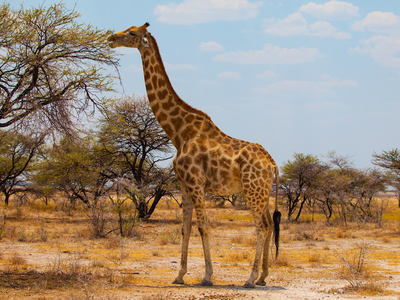

AFRICA
Lemur de cola anillada
El lémur de cola anillada, también llamado maki de cola anillada, es una especie de primate estrepsirrino de la familia Lemuridae. El lémur de cola anillada es la única especie dentro del género monotípico Lemur y, al igual que otros lémures, se encuentra únicamente en Madagascar. Se le conoce localmente como hira o maky (maki en francés), y habita en los bosques de ribera y matorral espinoso de las regiones del sur de la isla. Es un animal omnívoro y el más terrestre de los lémures; de comportamiento diurno, se mantiene activo exclusivamente durante las horas con luz del día.
Mas informaciónJirafa

La jirafa es una especie de mamífero artiodáctilo de la familia Giraffidae propio de África. Es la más alta de todas las especies de animales terrestres existentes. Puede alcanzar una altura de 5,8 metros y un peso que varía entre 750 y 1600 kg.
Mas informaciónChimpance
Pan es un género de primates homínidos que comprende las especies Pan troglodytes (chimpancé común) y Pan paniscus (bonobo o chimpancé pigmeo). Por estudios de genética e inmunología se ha podido datar la divergencia entre su línea evolutiva y la de Gorilla hace 7-8 millones de años y de la de Homo hace unos seis millones de años. Las dos especies actuales se separaron de un último ancestro común hace unos dos millones de años, tras quedar aisladas una de la otra por el río Congo. Los seres humanos comparten el 98,70 % del genoma con el chimpancé. Al contrario que su historia genética, la historia fósil de los chimpancés es por ahora un misterio. Solo se conocen algunos dientes hallados recientemente en la zona este del Gran Valle del Rift, pertenecientes a Pan troglodytes u otra especie de Pan aún innominada, que tienen una antigüedad de 500 000 años. En aquella época esa zona de África oriental ya era una sabana, mientras que estos animales solo se encuentran actualmente en las selvas de África occidental.
Mas informaciónLeopardo
El leopardo es un mamífero carnívoro de la familia de los félidos. Al igual que tres de los demás félidos del género Panthera, el león, el tigre y el jaguar, están caracterizados por una modificación en el hueso hioides que les permite rugir (nuevas investigaciones afirman que la capacidad de rugir se debe a adaptaciones morfológicas, sobre todo en la laringe y en las cuerdas vocales). También se lo conoce como pantera parda y, cuando presenta un pelaje completamente oscuro, como pantera (melánico).
Mas informaciónPingüino de Jackass
El pingüino de El Cabo, también conocido como pingüino africano o de anteojos, es la única especie de pingüino que vive en el continente africano y una de las cuatro del género Spheniscus.
Mas informaciónPigargo Vocinglero
El pigargo vocinglero es una especie de ave accipitriforme de la familia Accipitridae ampliamente distribuida por los ríos y lagos del África subsahariana, que se alimenta básicamente de peces. No se conocen subespecies.
Mas información